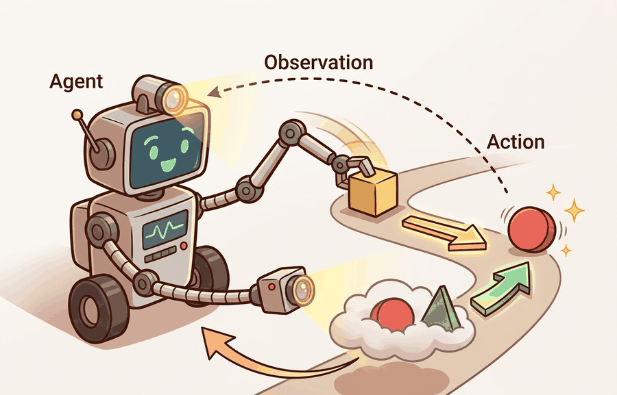

"The environment is the part of the experiment that gets a vote after every action."
A Boundary-Conscious Embodied AI Agent

The formal agent-environment contract introduced here is extended in section 2.2, which distinguishes hidden environment state from the observations the agent actually receives, and in section 2.3, which covers action spaces and their constraints. The Gymnasium and PettingZoo patterns referenced in sections 10.1 and 10.7 implement this same contract in production-ready code. Multi-agent variants of the interface recur in Part 10 alongside coordination and communication concepts.
A warehouse robot receives a depth-camera frame, lifts a box, and the shelf shifts two centimeters. The camera now shows something different from what any pre-recorded dataset ever captured. That gap between plan and reality is exactly where embodied AI lives, and it grows every millisecond the robot acts. To reason rigorously about that gap, researchers need a shared vocabulary: agent, environment, observation, action, state, reward, timestep. Right now, as robots leave controlled labs for hospitals and homes, this formal contract is the foundation every practitioner builds on. By the end of this section you will be able to specify any embodied system as a precise agent-environment interface and reason about what information crosses that boundary at each step.
Two teams run the identical policy on the identical robot and report success rates 30 points apart; neither team is lying, and the only thing that differs is how their environment wrapper labeled the moment an episode ended. That is what happens when the agent-environment loop stays an informal sketch instead of a precise object you can specify, implement, test, and log. The point is not to admire a loop diagram. The point is to know exactly what happens when a robot receives a sensor packet, chooses an action, waits for the world to respond, and records evidence about the result. Figure 2.1A labels the four typed signals (observation $o_t$, action $a_t$, next state $s_{t+1}$, reward $r_t$) that cross the agent-environment boundary on every timestep, and Figure 2.1 recasts that same loop as the evidence, decision, consequence pattern used throughout this section.
The distinction matters because many embodied failures are interface failures, not policy failures. A policy may be competent, but the environment wrapper may hide time-limit truncation. A simulator may expose privileged state that the real robot never observes. A logger may record reward yet omit the action clipping that changed the actual command. Consider illustrative figures consistent with documented evaluation artifacts in legged locomotion benchmarks (circa 2023-2024). The same policy scores near 90% success when a wrapper logs truncated episodes separately, and near 54% when the wrapper silently counts them as failures. Interface ambiguity alone opens that gap of more than 30 percentage points; nothing about the agent changed.
An embodied experiment is only as clear as its transition record: observation, action, reward or score, termination, truncation, timing, and diagnostic info. If any field is vague, later results become hard to interpret.
Theory
At time $t$, an agent receives an observation $o_t$, chooses an action $a_t$, and receives a consequence that usually includes a new observation $o_{t+1}$, a reward or score $r_{t+1}$, and episode status. The environment owns the transition dynamics. The agent owns the decision rule. The evaluator owns the claim about whether behavior was good.
For a fully specified single-agent environment, the minimal contract is close to the Gymnasium pattern: reset starts an episode and returns an initial observation plus metadata; step(action) advances the world and returns observation, reward, terminated, truncated, and info. Terminated means the task reached a natural end. Truncated means an external limit, such as a time limit, stopped the episode.
A common assumption is that the observation $o_t$ equals the environment's internal state $s_t$. In embodied AI that assumption is almost always false. A robot's camera captures a two-dimensional projection of a three-dimensional scene. Joints report encoder positions, not true link angles. Wireless latency can make the sensor packet stale before the policy reads it. Treat $o_t$ as a lossy, delayed, possibly noisy function of $s_t$. The agent must act under that uncertainty, not on the true state. Policies that confuse the two often succeed in simulation, where simulators return privileged state as the observation, then fail on hardware, where the full state is never directly available.
Why transition dynamics matter in embodied AI. A physical robot cannot pause the world while computing its next action. Motors have inertia, joints have compliance, and surfaces deform under load. If the transition function is wrong or hidden, a policy trained in simulation may issue commands that the real actuator cannot execute within one control cycle. That mismatch causes drift, and the drift compounds across every subsequent step. A 2% per-step position error sounds trivial. Over a 200-step episode it accumulates into a robot nearly 50 cm off course by the final action. This is why the same policy can look flawless in a simulator that returns perfect state and catastrophic on the physical platform that returns noisy, delayed sensor packets. Getting the dynamics right is not a formalism exercise; it is what separates a policy that transfers to hardware from one that works only in the log file.
How the transition function works. At each timestep, the environment applies the agent's action to its internal state using the rule $s_{t+1} \sim T(\cdot \mid s_t, a_t)$, then filters that state through an observation function to produce $o_{t+1}$. In code, step(action) performs both operations: it updates internal physics or state variables, then packages the result into the typed fields the agent receives. Logging the raw state alongside the observation lets engineers audit where the gap between what the robot sees and what actually happened first appeared.
Think of the transition function like rolling a bowl of soup across a tilted cutting board. You choose the direction and force of the push (your action), and the board's angle, surface texture, and liquid friction determine where the bowl ends up (the next state). Even identical pushes produce slightly different endpoints each time because small variations in grip and surface pile up. The notation $s_{t+1} \sim T(\cdot \mid s_t, a_t)$ captures exactly this: your action narrows the possibilities, but the world draws the actual outcome from a distribution shaped by current conditions, not a fixed rule.
Algorithm: Agent-Environment Interaction Loop
Input: policy $\pi(a \mid o; \theta)$, environment transition $T(s_{t+1} \mid s_t, a_t)$, reward function $R(s_t, a_t)$, episode horizon $H$
Output: trajectory $\tau = \{(o_t, a_t, r_t)\}_{t=0}^{H}$, cumulative return $G = \sum_{t=0}^{H} \alpha^t r_t$
- Call
reset()to obtain initial observation $o_0$ and clear episode state. - Set $t \leftarrow 0$, $G \leftarrow 0$,
terminated$\leftarrow$ False,truncated$\leftarrow$ False. - Select action $a_t \sim \pi(\cdot \mid o_t; \theta)$ using the current policy parameters $\theta$.
- Call
step($a_t$)to receive $(o_{t+1},\, r_{t+1},\, \text{terminated},\, \text{truncated},\, \text{info})$ from the environment. - Accumulate discounted return: $G \leftarrow G + \alpha^t \cdot r_{t+1}$, where $\alpha \in [0,1]$ is the discount factor.
- Append $(o_t, a_t, r_{t+1})$ to trajectory $\tau$ and record
infofields (latency, clipping, wrapper version). - If
terminated: episode reached a natural goal; set final flag and stop. - If
truncated: episode hit an external limit; bootstrap the value estimate for $o_{t+1}$ using $V^\pi(o_{t+1})$ before stopping. - Set $o_t \leftarrow o_{t+1}$, $t \leftarrow t + 1$; return to step 3 if neither flag is set.
- Verify $\nabla_\theta$ can be computed over $\tau$ only if action clipping, wrapper order, and reset distribution are logged in
info.
Step-Through: Agent-Environment Interaction Loop
Trace the loop with the tiny one-dimensional track from Code Fragment 2.1.1. Goal is position 3, horizon is 4 steps, discount $\alpha = 0.9$, step reward is -0.01 and goal reward is +1.0. Start at $o_0 = 1$, policy always picks "right".
t = 0: observe position 1, action "right". step returns next position 2, reward -0.01, terminated False, truncated False. Return so far: $G = 0.9^0 \times (-0.01) = -0.010$.
t = 1: observe position 2, action "right". Next position 3, which is the goal, so reward +1.0, terminated True, truncated False. Return: $G = -0.010 + 0.9^1 \times 1.0 = -0.010 + 0.900 = 0.890$.
The episode ends on a natural goal (terminated), so no value-bootstrap correction is applied and the trajectory is $\tau = \{(1,\text{right},-0.01),\ (2,\text{right},1.0)\}$ with final return $G = 0.890$. Now flip the start to $o_0 = 0$: the agent would need 3 rights to reach position 3, but the horizon truncates at step 4 first, so on the truncating step you would see terminated False and truncated True, and step 8 of the algorithm bootstraps $V^\pi(o_{t+1})$ instead of treating the cutoff as failure. Same policy, two completely different ending semantics, decided entirely by which flag fires.
When writing a custom Gymnasium environment, never set both terminated and truncated to True in the same step return. Gymnasium's TimeLimit wrapper sets truncated=True after a fixed step budget; if your inner environment also sets terminated=True on that same step, the bootstrap correction in most reinforcement learning (RL) libraries (which uses truncated to decide whether to add a value estimate for the final observation) will be applied incorrectly, quietly inflating returns. Always let natural goal-reaching drive terminated and let the TimeLimit wrapper (or your own step counter) drive truncated, and keep the two mutually exclusive.
Everything so far assumed a single decision process owns every action, but the moment a second agent enters the scene that assumption needs explicit machinery. For multi-agent settings, the contract also needs turn order or simultaneous actions. PettingZoo makes that distinction explicit through sequential and parallel APIs. This matters for embodied systems with people, other robots, traffic participants, or adversarial agents.
The single-agent contract holds when one decision process controls all actions and no other agent's behavior alters the transition function. It breaks the moment another agent's policy becomes part of the dynamics: a delivery robot sharing a corridor cannot treat human motion as fixed noise, because human paths respond to its trajectory. The interface must then expose whose turn it is, which agents are active, and whose observation carries evidence of other agents' recent actions. Heuristic: if removing one agent would change another's optimal policy, the single-agent contract is wrong.
The mechanism is a typed transition boundary. A useful environment does not merely run physics or replay data. It standardizes reset, step, action validation, observation structure, episode endings, random seeds, and diagnostic info so that closed-loop behavior can be reproduced.
Worked Example
The fastest way to see that typed transition boundary become concrete is to build the smallest possible version of it by hand. Code Fragment 2.1.1 builds a tiny environment contract without any reinforcement learning library. The example is deliberately small so that every returned field is visible.
# Section 2.1: runnable checkpoint for Environment dynamics and transition functions.
# Keep the output small so the evidence record can be inspected directly.
from dataclasses import dataclass
@dataclass
class Transition:
observation: dict
action: str
reward: float
terminated: bool
truncated: bool
info: dict
def step(position, action, time_step):
delta = 1 if action == "right" else -1
next_position = position + delta
reached_goal = next_position >= 3
timed_out = time_step >= 4
reward = 1.0 if reached_goal else -0.01
return Transition(
observation={"position": next_position},
action=action,
reward=reward,
terminated=reached_goal,
truncated=timed_out and not reached_goal,
info={"latency_ms": 12, "action_clipped": False},
)
print(step(position=2, action="right", time_step=3))The 28-line teaching loop becomes roughly 6 lines of user-facing interaction with Gymnasium once an environment class exists: make the environment, call reset, sample or choose actions, call step, and inspect terminated, truncated, and info. Gymnasium handles spaces, wrappers, seeding, reset semantics, and time-limit conventions internally. The hand-built version remains useful because it exposes exactly what the library standardizes.
Practical Recipe
- Name the agent process and the environment process separately.
- Specify reset, observation, action, reward, termination, truncation, and info fields before training.
- Track latency for observation capture, policy inference, transport, and action execution.
- Log the full transition tuple before aggregating success rate or return.
- Run a no-op or safe-action baseline to verify that the environment boundary behaves as expected.
A benchmark score is weak evidence when reset semantics, time limits, action clipping, or termination causes are hidden. A policy can look successful because the wrapper ended difficult episodes early or because the evaluator compared runs from different environment versions.
A warehouse robotics team used a custom simulator and a real cart robot. By writing the interface contract first, they discovered that the simulator returned object pose as privileged ground truth while the real robot returned delayed camera detections. The fix was not a larger model. The fix was to expose state-estimate confidence and sensor delay in the transition info record.
Real-World Application: Autonomous Driving (Waymo)
Waymo's Driver runs exactly this typed transition boundary in production: lidar and camera packets become the observation, the planned trajectory is the action, and the simulator-and-fleet logging stack records why each scenario ended (goal reached, disengagement, or time limit) as separate fields. Treating truncation and termination as distinct is what lets their evaluation compare a policy across millions of replayed miles without silently counting cutoff scenarios as failures.
If the environment wrapper cannot explain why an episode ended, it is not a benchmark yet. It is a suspense story with a CSV file.
World-model interfaces as environment surrogates (2024-2025). Rather than hand-authoring a transition function, recent work trains a neural world model that serves as the environment itself. Google DeepMind's Genie 2 (2024) generates interactive 3D environments from a single image and accepts agent actions through a standard step interface, demonstrating that the agent-environment contract can be implemented entirely inside a learned model. The open question is how to expose model uncertainty in the info field so agents can detect when the world model is extrapolating beyond its training distribution.
Asynchronous and event-driven environment contracts (2024-2025). Classical step-based interfaces assume that the agent and environment operate in lockstep. Physical deployments break this assumption: sensors publish at variable rates, actuators execute over multiple control cycles, and network delays make the concept of a single timestep ambiguous. The AnyMal-D team at ETH Zurich (2024) and concurrent work on Isaac Lab show that high-frequency legged locomotion requires sub-millisecond action dispatch with a separate observation stream, not a blocking step call. Formalizing asynchronous transition contracts and their bootstrap corrections is an active research area.
Causal interface auditing for sim-to-real transfer (2025-2026). A growing line of work, including research from the Berkeley Robot Learning Lab on distribution shift diagnostics, treats the transition info dict as causal evidence rather than debug output. By logging which observation features causally drove each action and comparing those causal graphs between simulator and hardware runs, researchers can identify which interface fields are responsible for the sim-to-real gap before deploying a new policy. Open problem: a PhD student could design a standardized causal-audit extension to the Gymnasium info dict that is cheap enough to run in production and sensitive enough to catch the most common transfer failures (contact model mismatch, actuator latency, observation noise magnitude).
Wrap Code Fragment 2.1.1 in a loop of five actions. Record every transition as JSON, then compute success rate twice: once counting truncation as failure and once reporting truncation separately.
Can you name which process owns the observation, which process owns the action choice, which process declares episode ending, and which field records timing evidence?
The formal interface is useful only if it prevents silent changes in the experiment. A policy result should say which environment version produced it, how reset sampled initial state, which action space was accepted, whether the command was clipped, why the episode ended, and whether the ending was a task termination or an external truncation.
The most common mistake is to treat the environment as background code. In embodied AI the environment is part of the scientific claim. If a wrapper changes observations, action limits, time limits, rewards, or diagnostic info, it changes the meaning of the result.
| Tool or Library | Role in This Topic | Builder Advice |
|---|---|---|
| Gymnasium | standardizes reset, step, spaces, termination, truncation, wrappers, and seeding | Use it to make single-agent environment contracts inspectable before training. |
| PettingZoo | separates sequential and parallel multi-agent interaction patterns | Use it when other agents, people, vehicles, or robots change the transition dynamics. |
| ROS 2 | carries observations, commands, clocks, transforms, and diagnostics across real robot processes | Use it to connect the formal environment contract to real-time deployed components. |
Before training, run an interface audit on one transition. The audit should fail if a required field is missing, if termination and truncation are confused, or if action clipping is hidden.
- Declare the reset output and step output as named fields.
- Check that observation and action types match the declared spaces.
- Log termination and truncation as different fields.
- Put latency, clipping, safety gate status, and wrapper version in info.
- Save the first transition from every experiment run as a smoke-test artifact.
# Audit one transition record before trusting an environment result.
transition = {
"observation": {"position": 3},
"action": "right",
"reward": 1.0,
"terminated": True,
"truncated": False,
"info": {"latency_ms": 12, "action_clipped": False, "wrapper_version": "v2"},
}
def audit_transition(row: dict[str, object]) -> list[str]:
required = {"observation", "action", "reward", "terminated", "truncated", "info"}
problems = [f"missing {key}" for key in sorted(required - row.keys())]
if row.get("terminated") and row.get("truncated"):
problems.append("terminated and truncated cannot both explain the same ending")
info = row.get("info", {})
for key in ["latency_ms", "action_clipped", "wrapper_version"]:
if key not in info:
problems.append(f"info missing {key}")
return problems
print(audit_transition(transition))When an agent-environment experiment fails, first inspect the transition boundary. Check reset distribution, action clipping, wrapper order, time-limit handling, reward emission, and diagnostic info before changing the policy.
A formal agent-environment interface is the smallest unit of closed-loop evidence. If the transition record is clear, later learning, simulation, logging, and deployment decisions have a stable foundation.
Write a transition schema for a door-opening robot. Include one field that belongs to the evaluator but is not visible to the agent.
Project Ideas
Beginner (weekend): Build a custom Gymnasium environment that models a one-dimensional cart moving on a track toward a goal, returning all five step fields (observation, reward, terminated, truncated, info) and logging every transition to JSON. The key challenge is keeping terminated and truncated mutually exclusive while a TimeLimit wrapper runs on top of your environment.
Intermediate (1-2 weeks): Use PyBullet or MuJoCo to implement a door-opening task where the observation is a wrist-camera RGB image and the action is a six-DOF end-effector delta. Wire it to a Gymnasium wrapper that exposes joint torques and contact forces in the info dict. The key challenge is bridging the privileged simulator state (full object pose) and the partial camera observation so the gap is logged, not hidden, enabling you to audit sim-to-real readiness before touching hardware.
Intermediate (1-2 weeks): Use LeRobot with a ROS 2 bridge to record ten teleoperated trajectories on a real or simulated arm, then replay each trajectory and compare the logged observation sequence against the commanded actions to measure action-to-observation latency per joint. The key challenge is synchronizing ROS 2 timestamps with the LeRobot episode index so latency spikes can be tied to specific transition records rather than averaged away.
What's Next?
Section 2.2 distinguishes hidden state from the observations the agent actually receives.
Bibliography & Further Reading
Foundational References For This Section
Bellman, R.. "A Markovian Decision Process." (1957). https://doi.org/10.1515/9781400835386-007
The mathematical origin of the state, action, transition, and reward framing.
Kaelbling, L. P., Littman, M. L., and Cassandra, A. R.. "Planning and acting in partially observable stochastic domains." (1998). https://www.sciencedirect.com/science/article/pii/S000437029800023X
A foundational Partially Observable Markov Decision Process (POMDP) reference for belief-state reasoning under partial observability.
Farama Foundation. "Gymnasium Documentation." (2024). https://gymnasium.farama.org/
The maintained reference for reset, step, spaces, termination, truncation, wrappers, and reproducible environments.